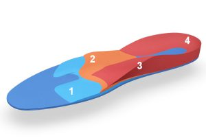

Waarom de zolen voor het dagelijks leven niet goed werken tijdens het skiën.
Het is een van de meeste gestelde vragen van klanten die een steunzool dragen in het dagelijks leven: 'Kunnen mijn eigen steunzolen ook in mijn skischoenen'. Een logische vraag, want mensen die een steunzool dragen in hun gewone schoenen of sportschoenen, doen dit natuurlijk omdat zij voetklachten hebben. Vaak komen die klachten ook voor tijdens het skiën, sterker nog, sommige voetklachten manifesteren zich heftiger in een skischoen dan tijdens de Algemeen Dagelijkse levensverrichtingen (ADL) zoals dat officieel heet. Sommige klachten zijn juist weer veel minder in een skischoen, daarover straks meer.
Het antwoord op de vraag 'Kunnen mijn steunzolen ook in mijn skischoenen?' is over algemeen te beantwoorden met 'nee'.
Uiteraard zijn er uitzonderingen, maar voordat ik daar dieper op in ga, eerst iets over steunzolen en hun werking voor schoenen in het dagelijks leven.
Hoe werkt een steunzool in uw normale (sport)schoenen?
Over de exacte werking van steunzolen zijn in de loop der tijd heel veel wetenschappelijke artikelen verschenen en over de werking van de verschillende soorten steunzolen zijn niet alle geleerden het helemaal met elkaar eens. Wat wel uit diverse onderzoeken blijkt, is dat steunzolen wel degelijk een goede werking hebben als zich in de voet een pathologie (een aandoening) bevindt.
Zo heeft het zin om bijvoorbeeld bij hielspoor (peesplaat ontsteking), een mortons neuroom, doorgezakte voorvoet of een scheefstand van de enkel, een steunzool toe te passen.

-
Sub-Antero (SA) Druk ontlastend en afwikkeling
-
Retro Capitale Transversale Balk (RCTB) Ondersteuning en druk verminderen
-
Asymmetrisch Geleng (ASG) Tegen (over)pronatie en geeft opdruk
-
Calcaneus Vang (CV) Stabilisatie en fixatie van de hiel
Alle elementen hebben een optimale werking bij het lopen en dus afwikkelen van de voet.
Wat de exacte werking van de elementen is, gaat voor dit artikel te ver maar er geldt voor alle steunzolen die gemaakt zijn voor het dagelijks leven, dat ze zijn gemaakt voor een voet die afwikkelt. Dus bijvoorbeeld lopen of hardlopen. En als er nu één ding is dat u niet doet in een skischoen, dan is het wel afwikkelen. De skischoen voorziet nu eenmaal in een zogenaamde statische houding van de voet. Dit geldt bijvoorbeeld ook voor schaatsen en wielrennen.
Een voet in een skischoen wikkelt niet af
En hiermee kom ik terug op de vraag 'Kunnen mijn steunzolen ook in mijn skischoenen?'. Omdat de elementen op gewone steunzolen zijn gemaakt en geoptimaliseerd voor lopen of hardlopen, is de werking ervan bij een statische voet, zoals de skischoen, heel beperkt of is er nagenoeg niet. Sterker nog, iedereen die wel eens geprobeerd heeft zijn steunzolen in zijn of haar skischoen te stoppen zal gemerkt hebben dat de werking beperkt is en dat er vooral te weinig ruimte is in een skischoen. Natuurlijk, uitzonderingen bevestigen de regel en vooral ¾ zolen willen nog wel eens passen en ondersteuning bieden maar over het algemeen is het geen succes.
Wat kan er wel in een skischoen om klachten te verminderen?
Er zijn meerde mogelijkheden om klachten in skischoenen aan te pakken. Soms is daar geen aparte steunzool voor nodig en soms een aangepaste steunzool die speciaal gemaakt is voor in een skischoen. De ervaring leert dat klachten die gerelateerd zijn aan lopen zoals bijvoorbeeld hielspoor (peesplaat ontsteking), doorgezakte voorvoet of overpronatie in een skischoen veel milder zo niet afwezig zijn. Bij andere klachten zoals bijvoorbeeld bij een slijmbeursontsteking in de hiel, kan ook een aanpassing worden toegepast waardoor de pijn wordt verminderd. Zo'n aanpassing van de skischoen kan veel kleiner zijn dan een steunzool vanwege de beperkte bewegingsvrijheid in de skischoen. Een veel voorkomende klacht als Mortons neuralgie (een afknelling van een zenuw in de voorvoet) moet wel worden aangepakt met een steunzool. Wij maken daar een speciale sportzool voor die in een skischoen past.
Het is dus wel belangrijk dat u tijdens het assessment met de bootfitter vertelt of u een steunzool draagt in het dagelijks leven en welke klachten u ervaart zowel tijdens als buiten het skiën.
Welke steunzolen hebben wel nut in een skischoen?
De steunzolen de wij gebruiken in een skischoen, ook als u geen specifieke voetklachten heeft, hebben eigenlijk één belangrijk doel en dat is uw voet stabiliseren. Er ontstaan tijdens het skiën zulke krachten op uw voeten en onderbeen dat uw voet constant aan het zoeken is naar grip en ondersteuning van de voetboog. Over de soorten en methoden scheef ik al eerder in dit artikel over steunzolen maar het doel is altijd om uw voet in een neutrale positie in de skischoen te zetten.
Het grote verschil met een podologische steunzool zit hem in de maakwijze. De podoloog maakt een scan van uw voeten, daarna wordt het recept (plaatsing van de elementen) gemaakt in de software. Dit zolenplan wordt elektronisch naar een podolab gestuurd waarna de steunzolen met behulp van een computerfreesmachine CAD/CAM worden vervaardigd.
Ski-steunzolen daarentegen worden terplekke bij ons op IJburg gemaakt volgens de zogenaamde casting methode. U zet uw voeten op een soort kussentjes gevuld met hele kleine glazen balletjes die vacuüm wordt gezogen. De afdruk die dan ontstaat, vormt de basis voor de thermoplastische steunzolen die dan worden gevormd. Wij doen dit altijd zittend! Alleen dan is het mogelijk om een goede steunzool te maken met de voet in de neutrale stand.
Meer weten of heeft u voetklachten in het dagelijks leven of tijdens het skiën? Maak hier een afspraak.